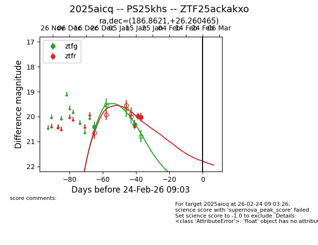
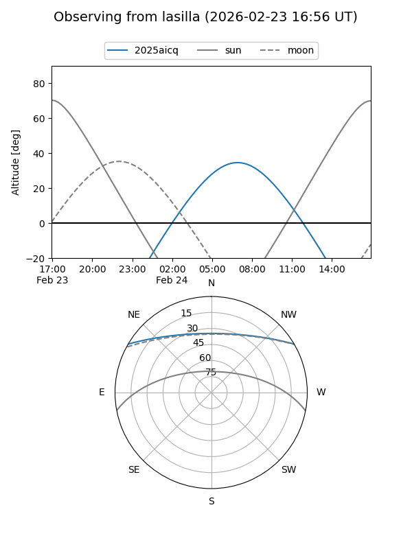
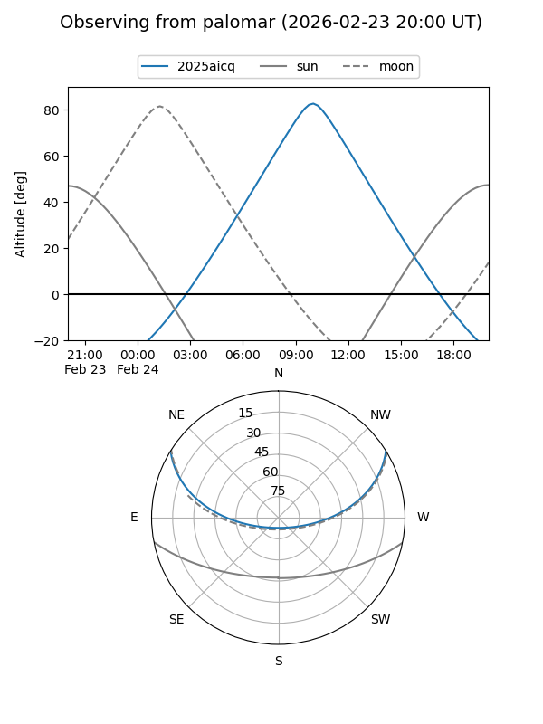
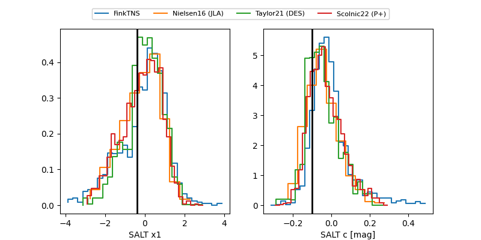

2025aicq
Target 2025aicq at 2026-01-14 12:35
Aliases and brokers:
FINK: link
Lasair: link
ALeRCE: link
TNS: link
YSE: link
alt names
ZTF25ackakxo (ztf,fink_ztf)
2025aicq (tns,yse)
PS25khs (panstarrs)
Coordinates:
equatorial (ra, dec) = 186.8621,+26.26046
equatorial (HMS+DMS) = 12:27:26.91,+26:15:37.67
galactic (l, b) = (220.7750,+84.57262)
Flags:
Photometry:
last ztfg=20.31
2 ztfg detections
Lightcurve

Visibility


Additional plots
